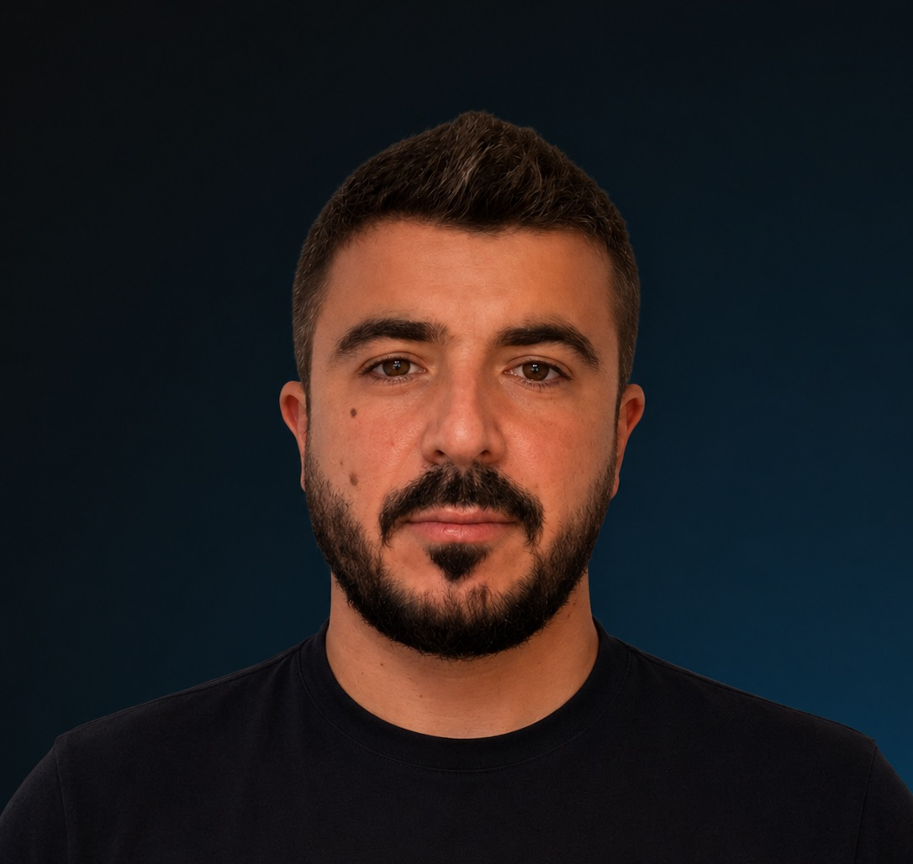

For Michael
of Noetio

PhotoAI Visibility Search & Founding Growth Marketer
In 2011 I dropped out of engineering university to build and run an affiliate marketing blog (adult niche), which went on for 12 years, survived dozens of algorithms that killed my competitors, and earned me 7 figures, before it died.
This was pure SEO work; advertising in adult is complex, and you have to nail your SEO to survive and thrive.
- What I have
- 13 years of SEO foundation.
- What is missing
- The last 2 years of GEO/AEO evolution.
- Time to cover the gap
- One month of full immersion and I will know everything I missed.
Founding Editor
I ran a blog for a decade; editing content was my daily task.
I wrote content myself for the first year or two, then hired, managed and wrote instructions and guidelines for dozens of writers in my career.
Using various keyword research tools from Google Ads (back in the old days when you had search volume for free), Ahrefs, Surfer, AnswerThePublic, etc., I built templates for them to follow; I checked their copy, improved it, and got it back to them.
I made sure content would first of all add value to the reader in terms of information and good vibes, keep them on page, be scrollable for those who just skim through it before reading (good headings, blocks, etc.), and have them leave the page enriched and wanting to share it. Besides all the on-page SEO, I took care of writing E-E-A-T-first bios, etc.
I am not a native English speaker; I am from Italy, but I moved to Australia in 2010 and have lived in English for the past 16 years. While my English is 99% perfect, a quick "proofread only" AI check is 2 seconds away nowadays.
- What I have
- 10+ years of managing writers, hiring writers, writing guidelines, optimizing, etc.
- What is missing
- Non-adult writing experience. Non-native English speaker.
- Time to cover the gap
- There's no gap here; I can do this job 100%.
Founding Partnerships
As a superaffiliate, I have dealt with many affiliate managers from numerous companies; I negotiated deals for my blog and have seen both the worst and the best in partners: who knows how to convince an affiliate and who doesn't.
- What I have
- Relationship management, outreach experience (Apollo, etc.), negotiation experience.
- What I don't have
- Warm SEO agency relationships.
- Time to cover the gap
- A few months of swimming in these waters.
Founding Engineer Measurement
I spent the last 3 years (after my blog died) learning AI coding and building various SaaS using LLMs, APIs, etc., including creapp.dev and Fabio Travel (an MCP server on OpenAI). While I seem unqualified for this position, it's the one that interests me the most.
- What I have
- Engineering background, engineering mindset, building things with Python and TypeScript using AI as a coding partner.
- What I don't have
- Coding without AI.
- Time to cover the gap
- Practice.